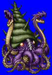
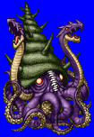
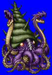
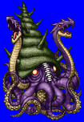

Height: 2500 meters Weight: ???
Habitat: Arctic sea Origin: Northern Europe
Meaning: "Krake", meaning "polar zone" in Norwegian
An enormous sea monster that lives in the polar regions. Its actual shape is unclear. It is often drawn as a squid, octopus, or jellyfish. Its size is so massive that it is often mistaken for an island. When a ship became lost at sea, its loss was sometimes attributed to the Kraken in the absence of another cause. It attacks ships and prey using its many massive suction cups.
See also: Octopus